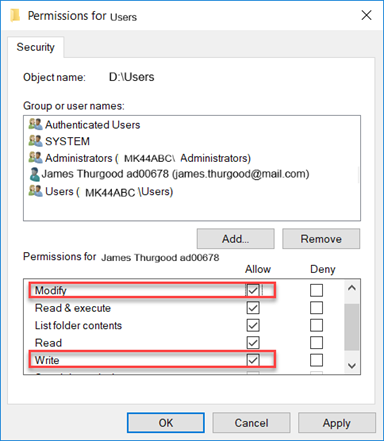

|
Problem | Troubleshooting |
Creating the project failed. When selecting a project, the Start icon is  not enabled and project displays the status: not enabled and project displays the status: Running- incomplete. | Check whether the Win CC OA Console or Win CC OA Log Viewer is open. If yes, close them.
Ensure that the project folder is not open in Windows Explorer, and that its content is not being used by any application. |
Creating the project failed with the message Project with the given name already exists. | - Open Win CC OA Project Administration from the Windows Start menu.
- Select and right-click the project with the same name and select Delete Project.
- Select Delete directory and click OK.
NOTE: The following name is a reserved name and must not be used as a project name while creating a project:
— GMSMainProject
|
Cannot access Desigo CC client application on the client/FEP stations. | - The project folder is not automatically shared. Ensure that the project folder you created is shared and accessible to the logged-on user on the client/FEP stations. For more information, see Sharing the project folder on Server.
- The Windows domain user on the client/FEP should have the required Read/Write privileges to the folders (documents, devices, graphics, libraries, profiles, and shared) on the server.
- Ensure that the changes on the server project (for example, deleting an existing project and creating of a new one) are synchronized with the client project. You may also check if the virtual directories are updated whenever there are changes on the server project.
|
Starting, Upgrading, Adding to a project fails. | - Applicable only when the default value for the system account is changed to the domain user.
The password for the Pmon Service GMS_WCCILpmon_[Project Name] user of the project must always be the same as the Windows password of the domain user configured as the default account. Every time you change the domain user password for Windows, you must manually change the password of the Pmon service. To update the password of the logged-on domain user for the Pmon service, perform the following steps: - Open the Windows Task Manager and click Services, to open the Services window.
- Locate the GMS_WCCILpmon_[Project Name] in the Name column. Right-click the project and select Properties.
- Select the Log On tab, and provide the valid password for the user.
- Click OK.
|
Saving the System account user fails with a message The System Account User does not have the Log On As a Service right. | - Make sure that the System account user has:
— Log on as a service right and
— Administrative rights. You can provide administrative rights to a Windows user from
Control Panel > User Accounts > Manage User Accounts > Properties > Group Membership.
|
You selected a project in the SMC tree that has a corrupt project database, indicated by the status stopped - last repair failed. | Perform the steps to repair the project database of the stopped project. |
You want to change the language setting after the project is created. | - Do one of the following:
— Edit the StartSMC.bat file present at [Installation Drive]:\[Installation Folder]\GMSMainProject\bin by adding a /librarian switch.
— Start the SMC by clicking the StartSMCEngineering.bat file that already contains the /librarian switch. - Save and start the SMC. Stop the project, click Edit
 and select the desired language. and select the desired language.
|
You are working with the Web application, but the Web application user does not have permission on the virtual directories of the server project. An error message displays Client Profile cannot be retrieved. | - Check whether the Web application user has permission on the virtual directories of the server project. If not, set these permissions. On the client/FEP SMC for the Web application user, you must manually set permissions.
- Check whether the CCom port certificate provided in a project is valid (does the full computer name displays in the Subject name field of the certificate provided). If not, configure a valid certificate. You may also use the wildcard (*) in the certificate name.
|
If the destination machine, where you are restoring the project backup contains BACnet field points for the extension module standard third-party BACnet, is not the same machine you performed the backup. | - You must adjust the BACnet stack settings in the BACnet driver and BACnet network for smooth communication. For more information, see the Configuring the BT BACnet Stack section.
|
After restoring the project backup, the Project status is Outdated – check on upgrade – inconsistent progs file. | - Open the Manager Details expander.
- Identify the manager (in red) that is inconsistent in the progs file.
|
You cannot work with projects in SMC; the Projects node does not display any existing projects. | - Contact your local customer support.
|
If the running project suddenly displays the Project Status as Outdated – Too old to upgrade. | - Close SMC.
- Go to [Installation Drive]:\[Installation Folder]\[Project Name].
- Rename the config file, for example, config_old.
- Rename the config. bak file available to config.
- Launch SMC and start the project.
|
On change of the installation drive, you cannot start the old projects created on a different installation drive. | - Launch the SMC.
- Select the project node under Projects.
- Click Activate to activate the project on a different drive than the installation.
- Click Start.
|
Cannot start the project and the Data manager is in the Initializing state. | Verify the Pmon user has Read permissions along with Write and Modify permissions on the project folder of the project you are about to start. To set the write and modify permissions, perform the following steps:
- Close SMC.
- Go to [Installation Drive]:\[Installation Folder]\[Project Name] and right click on it.
- Select Properties. The [folder name] Properties dialog box displays.
- Select the Security tab and click Edit.
- Click Add to add the project’s Pmon user to the group.
- Select the Modify and Write permissions for the project’s Pmon user.
- Click Apply and then OK to set the permissions.
- Launch SMC and start the project.
 |
After the selected project is successfully upgraded, the status bar displays "Project upgraded successfully" butServer Project Information expander still display Outdated (in red). | If Server Project Information expander still display Outdated (in red), then select corresponding main project node to refresh the project status. |
The following error message displays when the file record limit for some database files is exceeded and the changes at the configs cannot be saved.
WCCILdata(0), 2023.04.11 09:55:25.753, SYS, SEVERE, 69, Database error, DataManTask, dbError, RAIMA Database Error *** Code:-909 (SYSTEM/OS error: -909file record limit exceeded
C errno = 0: No error
FILE: ..\..\..\ExternLibs\rdm45\runtime\Dio.c(2096))
| Remove events from SMC. For more information, see Remove Events of a Project and also WINCCOA knowledge Base article. |